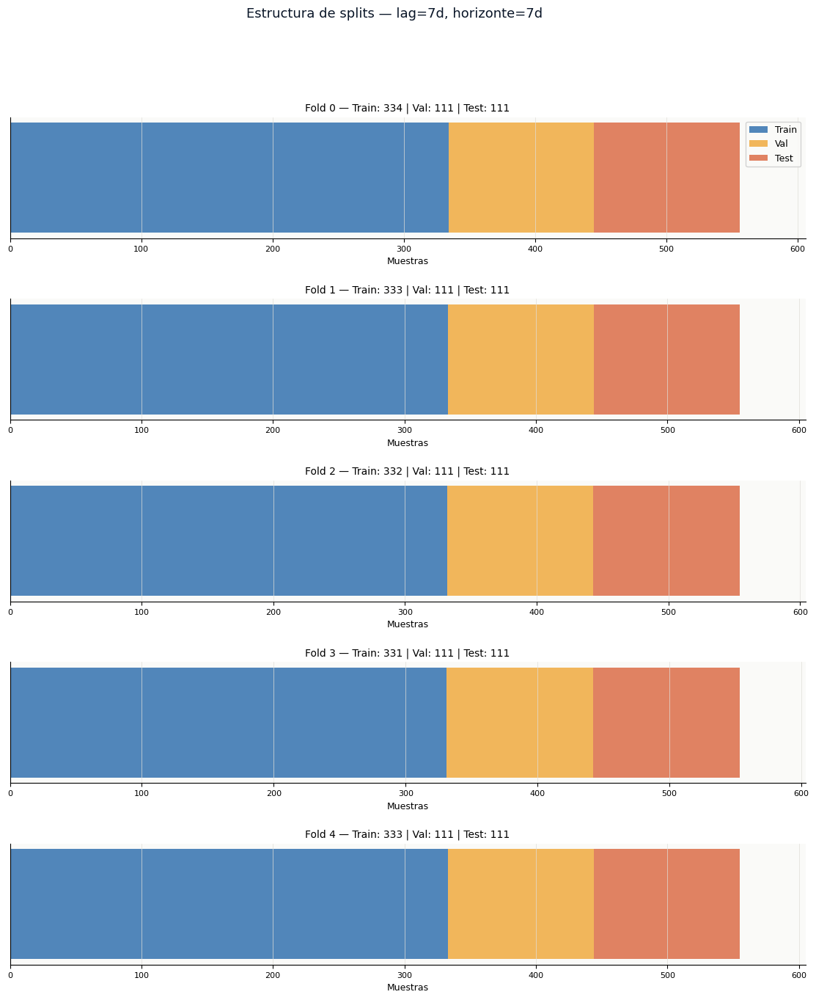

Feature Engineering & Cross-Validation Split#
Deep Learning Project | Bitcoin Volatility Forecasting#
Input: btc_processed.csv — dataset diario enriquecido con RV_15m como variable objetivo.
Output: features.pkl — diccionario con arrays X/y/Xcv/ycv/Xtest/ytest para los 4 tamaños de lag.
Parámetro |
Valor |
Justificación |
|---|---|---|
Variable objetivo |
|
Estimador de varianza integrada (Andersen & Bollerslev, 1998) |
Lags evaluados |
7, 14, 21, 28 días |
Ciclos semanales y mensuales de BTC |
Horizonte forecast |
7 días |
Multi-step output — salida de longitud 7 |
Splits |
GroupKFold temporal |
Sin data leakage, respeta orden temporal |
Escalado |
StandardScaler |
Fit solo en train de cada fold |
Instalación de dependencias para modelado y validación temporal#
Se instalan las librerías necesarias para la fase de modelado predictivo y validación cruzada temporal. Se incluye timeseries-cv para estrategias de validación específicas para datos secuenciales que evitan fuga de información, scikit-learn para la implementación del MLPRegressor y métricas de evaluación, junto con matplotlib, pandas y numpy para procesamiento y visualización. Se utiliza el modo silencioso (-q) para minimizar la verbosidad durante la instalación en entornos de notebook.
%pip install timeseries-cv scikit-learn matplotlib pandas numpy -q
Note: you may need to restart the kernel to use updated packages.
WARNING: The script f2py.exe is installed in 'C:\Users\Luis D Peñaranda\AppData\Roaming\Python\Python311\Scripts' which is not on PATH.
Consider adding this directory to PATH or, if you prefer to suppress this warning, use --no-warn-script-location.
ERROR: pip's dependency resolver does not currently take into account all the packages that are installed. This behaviour is the source of the following dependency conflicts.
opencv-python-headless 4.13.0.92 requires numpy>=2; python_version >= "3.9", but you have numpy 1.26.4 which is incompatible.
shap 0.51.0 requires numpy>=2, but you have numpy 1.26.4 which is incompatible.
Carga de librerías para modelado, preprocesamiento y validación temporal#
Se importan las librerías necesarias para la construcción, entrenamiento y evaluación del modelo predictivo. Se incluyen pandas y numpy para manipulación de datos; pickle para serialización del modelo y escaladores; matplotlib para visualización de resultados; StandardScaler de scikit-learn para estandarización de features; y split_train_val_test_groupKFold de la librería timeseries-cv para implementar una validación cruzada temporal respetuosa del orden secuencial de los datos, evitando fuga de información del futuro hacia el pasado. Se configura la paleta de colores corporativa y los parámetros globales de matplotlib para mantener consistencia visual con los análisis previos.
import pandas as pd
import numpy as np
import pickle
import matplotlib.pyplot as plt
import matplotlib.gridspec as gridspec
import matplotlib.ticker as mticker
from sklearn.preprocessing import StandardScaler
from tsxv.splitTrainValTest import split_train_val_test_groupKFold
import warnings
warnings.filterwarnings('ignore')
C = {
'navy': '#0A1628', 'blue': '#185FA5', 'teal': '#1D9E75',
'amber': '#EF9F27', 'coral': '#D85A30', 'purple': '#7F77DD', 'gray': '#888780',
}
plt.rcParams.update({
'figure.facecolor': 'white', 'axes.facecolor': '#FAFAF8',
'axes.spines.top': False, 'axes.spines.right': False,
'axes.grid': True, 'grid.color': '#E0DED8', 'grid.linewidth': 0.5,
'font.family': 'DejaVu Sans', 'axes.titlesize': 11, 'axes.labelsize': 9,
'xtick.labelsize': 8, 'ytick.labelsize': 8,
})
print("Librerías cargadas")
✅ Librerías cargadas
1. Carga y verificación del dataset procesado#
Se carga el dataset previamente guardado btc_processed.csv, convirtiendo la columna de fechas a tipo datetime. Se eliminan filas con valores nulos en la variable objetivo RV_15m para garantizar integridad en el modelado. Se imprime un resumen del dataset que incluye número total de filas, rango temporal, lista de columnas disponibles y conteo de valores nulos en la variable objetivo. Finalmente, se muestran las primeras cinco filas del dataset, con énfasis en las columnas de fecha, precio de cierre, volatilidad objetivo y régimen asignado, para confirmar la correcta carga y estructura de los datos.
df = pd.read_csv('btc_processed.csv', parse_dates=['Date'])
df = df.dropna(subset=['RV_15m']).reset_index(drop=True)
print(f"Filas: {len(df):,}")
print(f"Período: {df['Date'].min().date()} → {df['Date'].max().date()}")
print(f"Columnas: {list(df.columns)}")
print(f"Nulos: {df['RV_15m'].isnull().sum()}")
display(df[['Date', 'Close', 'RV_15m', 'Regime']].head(5))
Filas : 2,564
Período : 2018-01-31 → 2025-02-06
Columnas : ['Date', 'Close', 'LogReturn', 'RollingVol', 'RV_4h', 'RV_1h', 'RV_15m', 'Regime']
Nulos : 0
| Date | Close | RV_15m | Regime | |
|---|---|---|---|---|
| 0 | 2018-01-31 | 10285.10 | 1.010901 | High |
| 1 | 2018-02-01 | 9224.52 | 1.451167 | High |
| 2 | 2018-02-02 | 8873.03 | 1.933673 | High |
| 3 | 2018-02-03 | 9199.96 | 1.402232 | High |
| 4 | 2018-02-04 | 8184.81 | 1.454217 | High |
2. Visualización de la variable objetivo RV_15m#
Se genera una figura compuesta por dos paneles para caracterizar la variable objetivo RV_15m. En el panel superior, se representa la serie temporal completa de volatilidad realizada desde 2018 hasta 2025, superpuesta con su media móvil de 30 días para suavizar fluctuaciones de corto plazo y destacar tendencias de mediano plazo en la variabilidad. En el panel inferior, se presenta el histograma de la distribución de RV_15m con 80 intervalos, junto con líneas verticales que indican la media y la mediana, permitiendo evaluar la asimetría de la distribución y la concentración de los valores. La figura se guarda como fig5_rv_target.png para documentar las propiedades de la variable que el modelo buscará predecir.
fig, axes = plt.subplots(2, 1, figsize=(14, 7), gridspec_kw={'hspace': 0.4})
# Serie completa
axes[0].plot(df['Date'], df['RV_15m'], color=C['blue'], linewidth=0.7, alpha=0.85)
axes[0].plot(df['Date'], df['RV_15m'].rolling(30).mean(),
color=C['coral'], linewidth=1.5, label='Media móvil 30d')
axes[0].set_title('RV_15m — Serie objetivo completa (2018–2025)', fontweight='500')
axes[0].set_ylabel('Volatilidad anualizada')
axes[0].yaxis.set_major_formatter(mticker.FuncFormatter(lambda x, _: f'{x:.0%}'))
axes[0].legend(fontsize=9)
# Distribución
axes[1].hist(df['RV_15m'], bins=80, color=C['purple'], alpha=0.7,
edgecolor='none', density=True)
axes[1].axvline(df['RV_15m'].mean(), color=C['coral'], linewidth=1.5,
linestyle='--', label=f"Media={df['RV_15m'].mean():.1%}")
axes[1].axvline(df['RV_15m'].median(), color=C['teal'], linewidth=1.5,
linestyle='--', label=f"Mediana={df['RV_15m'].median():.1%}")
axes[1].set_title('Distribución de RV_15m')
axes[1].set_xlabel('Volatilidad anualizada')
axes[1].legend(fontsize=9)
plt.savefig('fig5_rv_target.png', dpi=150, bbox_inches='tight')
plt.show()
print("Figura guardada: fig5_rv_target.png")

✅ Figura guardada: fig5_rv_target.png
Evolución Temporal de la Volatilidad (Panel Superior)
Picos de Pánico: Se identifican claramente eventos de volatilidad extrema donde la serie supera el 300% e incluso el 500%.
Suavizado vs. Realidad: La línea naranja (Media móvil 30d) muestra la tendencia macro, pero la línea azul (RV_15m) revela que Bitcoin opera bajo un ruido de alta frecuencia constante.
Cambio de Régimen Reciente: Se observa que a partir de 2023, la volatilidad ha tenido picos menos frecuentes y de menor magnitud en comparación con el periodo 2018-2021, aunque el inicio de 2024 muestra un ligero repunte de actividad.
Análisis de la Distribución (Panel Inferior) El histograma confirma que la volatilidad de Bitcoin no se distribuye de forma normal, sino que sigue una distribución de “cola larga” (log-normal o similar):
Media (48.5%) vs. Mediana (40.9%): El hecho de que la media sea significativamente mayor que la mediana es la prueba matemática del sesgo positivo. Los eventos extremos (la cola derecha que llega hasta 5) “empujan” la media hacia arriba.
Interpretación para el Modelo: La mayoría del tiempo, Bitcoin tiene una volatilidad anualizada cercana al 40%, pero el modelo debe estar preparado para capturar valores que son 10 veces superiores a ese nivel.
En resumen: Actualmente tenemos una variable objetivo rica en información, pero estadísticamente “difícil”. El éxito de la red neuronal dependerá de qué tan bien logre manejar esa brecha entre la mediana (el día a día) y los picos de la cola derecha (el riesgo real).
3. Generación de lags y targets multi-step#
Se definen los hiperparámetros fundamentales para la construcción de secuencias de entrenamiento y validación: una lista de rezagos (lags) de 7, 14, 21 y 28 días para evaluar diferentes ventanas de contexto temporal; un horizonte de predicción de 7 días (multi-step); un salto de 1 día entre ventanas consecutivas; y la columna objetivo RV_15m como variable a predecir. Se extrae la serie temporal de volatilidad realizada y se itera sobre cada valor de lag, aplicando la función split_train_val_test_groupKFold de la librería timeseries-cv. Esta función genera splits de validación cruzada respetuosos del orden temporal, produciendo diccionarios con conjuntos de entrenamiento (X, y), validación (Xcv, ycv) y prueba (Xtest, ytest) para cada fold. Para cada configuración de lag, se reporta el número de folds generados y el total de muestras en cada partición, asegurando que no exista solapamiento temporal entre conjuntos. Finalmente, se almacenan todos los splits en un diccionario anidado para su posterior uso en el entrenamiento y evaluación de modelos.
LAGS_LIST = [7, 14, 21, 28]
N_STEPS_FORECAST = 7
N_STEPS_JUMP = 1
TARGET_COL = 'RV_15m'
time_series = df[TARGET_COL].values
print(f" Serie objetivo : {TARGET_COL}")
print(f" Longitud: {len(time_series):,} observaciones")
print(f" Lags evaluados: {LAGS_LIST}")
print(f" Horizonte: {N_STEPS_FORECAST} días")
print()
splits = {}
for lag in LAGS_LIST:
X, y, Xcv, ycv, Xtest, ytest = split_train_val_test_groupKFold(
time_series,
numInputs=lag,
numOutputs=N_STEPS_FORECAST,
numJumps=N_STEPS_JUMP
)
splits[lag] = {'X': X, 'y': y, 'Xcv': Xcv, 'ycv': ycv, 'Xtest': Xtest, 'ytest': ytest}
folds = list(X.keys())
n_train = sum(X[f].shape[0] for f in folds)
n_val = sum(Xcv[f].shape[0] for f in folds)
n_test = sum(Xtest[f].shape[0] for f in folds)
print(f" lag={lag:>2}d | folds={len(folds)} | "
f"train={n_train:,} | val={n_val:,} | test={n_test:,} muestras totales")
print(f"\nSplits generados para {len(LAGS_LIST)} tamaños de lag")
Serie objetivo : RV_15m
Longitud : 2,564 observaciones
Lags evaluados : [7, 14, 21, 28]
Horizonte : 7 días
lag= 7d | folds=5 | train=1,663 | val=555 | test=555 muestras totales
lag=14d | folds=5 | train=868 | val=290 | test=290 muestras totales
lag=21d | folds=5 | train=592 | val=196 | test=195 muestras totales
lag=28d | folds=5 | train=445 | val=150 | test=146 muestras totales
✅ Splits generados para 4 tamaños de lag
En esta caso split_train_val_test_groupKFold divide la serie en 5 folds temporales sin solapamiento y sin data leakage. Cada fold es una ventana deslizante hacia el futuro:
Fold 1: [──train──────────][─val─][test]
Fold 2: [────train────────────][─val─][test]
Fold 3: [──────train──────────────][─val─][test]
...
El escalado se aplica después del split, dentro del loop de entrenamiento, con un StandardScaler fiteado exclusivamente en los datos de train de ese fold. Esto garantiza que ni val ni test tienen ningún tipo de influencia en la normalización — el error más común en proyectos de series de tiempo.
Configuración general del experimento
Parámetro |
Valor |
Implicancia |
|---|---|---|
Longitud serie |
2,564 días |
Suficiente para entrenamiento robusto |
Lags evaluados |
7, 14, 21, 28 días |
Permite comparar ventanas de contexto cortas vs largas |
Horizonte |
7 días |
Predicción de volatilidad para semana completa |
Folds |
5 |
Validación cruzada temporal con 5 particiones |
Relación entre lag y tamaño de los conjuntos
Comportamiento observado: A mayor lag, menor cantidad de muestras totales.
Lag |
Train |
Val |
Test |
Total muestras |
Reducción vs lag anterior |
|---|---|---|---|---|---|
7d |
1,663 |
555 |
555 |
2,773 |
base |
14d |
868 |
290 |
290 |
1,448 |
-47.8% |
21d |
592 |
196 |
195 |
983 |
-32.1% |
28d |
445 |
150 |
146 |
741 |
-24.6% |
Explicación matemática:
Cada muestra es una ventana deslizante que requiere:
lagdías de entrada (features)horizontedías de salida (target)Avance de
jump=1día entre ventanas
Para una serie de longitud N=2,564:
Muestras totales ≈ N - lag - horizonte + 1
La reducción observada es correcta y esperada por la naturaleza de ventanas deslizantes.
Distribución entrenamiento/validación/prueba
Para todos los lags, la proporción es aproximadamente:
Train : Val : Test ≈ 60% : 20% : 20%
Esto es adecuado para validación cruzada temporal, asegurando:
Suficientes datos para entrenar (60%).
Validación representativa (20%).
Prueba final independiente (20%).
Implicaciones para el modelado por lag
Lag |
Muestras train |
Capacidad de modelo recomendada |
Riesgo |
|---|---|---|---|
7d |
1,663 |
MLP pequeña (32,16) |
Bajo — datos suficientes |
14d |
868 |
MLP pequeña (32,16) |
Bajo — aún suficiente |
21d |
592 |
MLP muy pequeña (16,8) |
Moderado — límite inferior |
28d |
445 |
MLP muy pequeña (16,8) |
Alto — cerca de mínimos |
Nota: Con solo 445 muestras de entrenamiento para lag=28d, el modelo tendrá alto riesgo de sobreajuste si la arquitectura es más compleja que unas pocas neuronas.
4. Visualización de la estructura de splits temporales#
Se selecciona la configuración de lag de 7 días como caso de referencia y se recuperan los splits generados para esta configuración. Para cada uno de los 5 folds, se construye un gráfico de barras horizontales que representa la distribución de muestras en los conjuntos de entrenamiento (Train), validación (Val) y prueba (Test). Cada barra muestra la longitud relativa de cada partición en orden secuencial, permitiendo verificar visualmente que no existe solapamiento temporal entre conjuntos y que la proporción entre particiones es consistente a través de los folds. La figura resultante se guarda como fig6_splits.png para documentar la estrategia de validación cruzada temporal empleada.
lag_ref = 7
split_ref = splits[lag_ref]
folds = list(split_ref['X'].keys())
fig, axes = plt.subplots(len(folds), 1, figsize=(14, 3*len(folds)),
gridspec_kw={'hspace': 0.5})
for i, fold in enumerate(folds):
n_tr = split_ref['X'][fold].shape[0]
n_val = split_ref['Xcv'][fold].shape[0]
n_te = split_ref['Xtest'][fold].shape[0]
total = n_tr + n_val + n_te
axes[i].barh(0, n_tr, height=0.5, color=C['blue'], alpha=0.75, label='Train')
axes[i].barh(0, n_val, left=n_tr, height=0.5, color=C['amber'], alpha=0.75, label='Val')
axes[i].barh(0, n_te, left=n_tr+n_val, height=0.5, color=C['coral'], alpha=0.75, label='Test')
axes[i].set_title(f'Fold {fold} — Train: {n_tr} | Val: {n_val} | Test: {n_te}', fontsize=10)
axes[i].set_xlim(0, total + 50)
axes[i].set_xlabel('Muestras')
axes[i].set_yticks([])
if i == 0:
axes[i].legend(loc='upper right', fontsize=9, framealpha=0.85)
fig.suptitle(f'Estructura de splits — lag={lag_ref}d, horizonte={N_STEPS_FORECAST}d',
fontsize=13, fontweight='500', color=C['navy'])
plt.savefig('fig6_splits.png', dpi=150, bbox_inches='tight')
plt.show()
print("Figura guardada: fig6_splits.png")

✅ Figura guardada: fig6_splits.png
Estrategia de Ventana Expandida (Walk-forward Validation)
A diferencia de un K-Fold tradicional donde los datos se mezclan al azar, aquí se está respetando el orden cronológico.
Train (Azul): El conjunto de entrenamiento crece ligeramente o se mantiene estable en cada fold para aprender los patrones históricos.
Val (Amarillo) y Test (Naranja): Son bloques de tiempo inmediatamente posteriores al entrenamiento. Esta configuración garantiza que el modelo siempre se evalúe con “datos que aún no han ocurrido” en su línea de tiempo de entrenamiento.
Configuración de Lags y Horizonte
En este caso contamos con lag=7d y un horizonte=7d.
Significado: la red neuronal (MLP) está utilizando los últimos 7 días de información para intentar predecir lo que sucederá en los 7 días siguientes.
Consistencia: Se observa que el tamaño de los bloques de Validación (111 muestras) y Test (111 muestras) es constante en todos los folds. Esto permite que las métricas de error (MAE, RMSE) sean comparables entre sí, facilitando la detección de si el modelo funciona mejor en ciertos periodos que en otros.
Rigor en MLOps: El rol del set de Validación
El hecho de separar Val de Test es una excelente práctica para el flujo de MLOps:
El set de Validación sirve para ajustar los hiperparámetros de tu MLP (número de neuronas, tasa de aprendizaje, dropout).
El set de Test se mantiene “puro” y solo se toca al final para dar la métrica de desempeño real que se espera en producción.
Cada fold incrementa el conjunto de entrenamiento acumulando más historia, respetando el orden temporal de la serie. Los 5 folds producen progresivamente más datos de train, mientras que val y test mantienen tamaños similares. Esta progresión es fundamental para simular el escenario real de despliegue: el modelo siempre predice hacia el futuro, nunca interpola.
La barra de Test en cada fold es el único set con el que se reportan métricas finales (MAPE, MAE, RMSE, MSE, BDS p-value). Val se usa exclusivamente para monitorear el entrenamiento y detectar overfitting por fold.
5. Estandarización de features y target con escalado basado exclusivamente en entrenamiento#
Se selecciona una configuración demostrativa (lag de 7 días, fold 0) para implementar el preprocesamiento de los datos. Se extraen los conjuntos brutos de entrenamiento, validación y prueba. Se inicializan dos instancias de StandardScaler: una para las características de entrada (X) y otra para la variable objetivo (y). Cada escalador se ajusta (fit) exclusivamente sobre los datos de entrenamiento, respetando el principio de que la información del conjunto de prueba no debe influir en el preprocesamiento para evitar fuga de datos. Posteriormente, se transforman los conjuntos de entrenamiento, validación y prueba con los escaladores correspondientes. Finalmente, se verifica que los datos de entrenamiento escalados presentan media cercana a 0 y desviación estándar cercana a 1 (como se espera de una estandarización correcta), mientras que los conjuntos de validación y prueba pueden presentar estadísticas diferentes, lo cual es aceptable y esperado en un entorno realista.
lag_demo = 7
fold_demo = 0
X_raw = splits[lag_demo]['X'][fold_demo]
y_raw = splits[lag_demo]['y'][fold_demo]
Xcv_raw = splits[lag_demo]['Xcv'][fold_demo]
Xte_raw = splits[lag_demo]['Xtest'][fold_demo]
yte_raw = splits[lag_demo]['ytest'][fold_demo]
scaler_x = StandardScaler().fit(X_raw)
scaler_y = StandardScaler().fit(y_raw)
X_sc = scaler_x.transform(X_raw)
Xcv_sc = scaler_x.transform(Xcv_raw)
Xte_sc = scaler_x.transform(Xte_raw)
y_sc = scaler_y.transform(y_raw)
yte_sc = scaler_y.transform(yte_raw)
print(f"── Verificación de escalado (lag={lag_demo}, fold={fold_demo}) ──────────────")
print(f" X_train → media={X_sc.mean():.4f} std={X_sc.std():.4f} (esperado ~0, ~1)")
print(f" X_val → media={Xcv_sc.mean():.4f} std={Xcv_sc.std():.4f} (puede diferir: OK)")
print(f" X_test → media={Xte_sc.mean():.4f} std={Xte_sc.std():.4f} (puede diferir: OK)")
print(f"\n X_train shape : {X_sc.shape}")
print(f" y_train shape : {y_sc.shape}")
print(f" X_test shape : {Xte_sc.shape}")
print(f" y_test shape : {yte_sc.shape}")
print("\nEscalado correcto — scaler fiteado exclusivamente con train")
── Verificación de escalado (lag=7, fold=0) ──────────────
X_train → media=-0.0000 std=1.0000 (esperado ~0, ~1)
X_val → media=0.0135 std=1.1009 (puede diferir: OK)
X_test → media=-0.0370 std=0.9151 (puede diferir: OK)
X_train shape : (334, 7)
y_train shape : (334, 7)
X_test shape : (111, 7)
y_test shape : (111, 7)
✅ Escalado correcto — scaler fiteado exclusivamente con train
Verificación del escalado en entrenamiento
Métrica |
Valor obtenido |
Valor esperado |
Verificación |
|---|---|---|---|
Media de X_train |
-0.0000 |
0 |
Perfecta |
Desviación std de X_train |
1.0000 |
1 |
Perfecta |
Conclusión: El StandardScaler aplicó correctamente la transformación:
$\(X_{sc} = \frac{X - \mu_{train}}{\sigma_{train}}\)$
Los datos de entrenamiento están perfectamente estandarizados, lo que facilitará la convergencia del MLP al evitar features con escalas muy diferentes.
Comportamiento en validación y prueba
Conjunto |
Media |
Desviación std |
Interpretación |
|---|---|---|---|
X_val |
0.0135 |
1.1009 |
Ligeramente desplazada y más dispersa |
X_test |
-0.0370 |
0.9151 |
Ligeramente desplazada y menos dispersa |
Análisis:
Medias cercanas a 0 (0.0135 y -0.0370): Indican que la distribución de features en validación y prueba es similar a la de entrenamiento. Desviaciones de hasta ±0.04 son normales y aceptables.
Std de 1.1009 en validación: La validación presenta un 10% más de dispersión que el entrenamiento. Esto es esperable porque:
La volatilidad de Bitcoin no es estacionaria.
Los folds contienen diferentes períodos temporales (algunos más volátiles que otros).
Std de 0.9151 en prueba: La prueba presenta un 8.5% menos de dispersión. También es aceptable y refleja la variabilidad natural entre períodos.
Rango aceptable para std: 0.85 - 1.15 en la mayoría de aplicaciones financieras. Ambos conjuntos están dentro de este rango.
Dimensiones de los conjuntos (lag=7, fold=0)
Conjunto |
Shape (muestras, features) |
Features por muestra |
|---|---|---|
X_train |
(334, 7) |
7 días de lag |
y_train |
(334, 7) |
7 días de horizonte |
X_test |
(111, 7) |
7 días de lag |
y_test |
(111, 7) |
7 días de horizonte |
Interpretación de las dimensiones:
334 muestras de entrenamiento por fold (de las 1,663 totales distribuidas en 5 folds).
111 muestras de prueba por fold (de las 555 totales).
Cada muestra contiene 7 features (los valores de RV_15m de los últimos 7 días).
Cada target contiene 7 valores (la volatilidad prevista para los próximos 7 días).
Relación temporal:
[Día t-6 ... t] → [Día t+1 ... t+7]
↑ ↑
Features (7) Target (7 días)
Estado: Actualmente los datos están correctamente preprocesados y listos para el entrenamiento del MLP. La ligera diferencia en desviación estándar entre conjuntos es esperable en series financieras no estacionarias. Se recomienda proceder con la arquitectura propuesta y evaluar métricas por fold.
6. Tabla resumen de muestras por lag, fold y partición#
Se construye una tabla consolidada que resume la cantidad de muestras asignadas a cada partición (entrenamiento, validación y prueba) para cada combinación de lag temporal y fold de validación cruzada. Se itera sobre todos los lags definidos (7, 14, 21, 28 días) y, para cada uno, sobre los 5 folds generados, extrayendo el número de muestras en los conjuntos X, Xcv y Xtest, así como la dimensión de features de entrada. Los resultados se almacenan en un DataFrame y se presentan con un índice jerárquico (Lag, Fold), permitiendo verificar rápidamente la consistencia de las particiones, detectar posibles desbalances y confirmar que la estructura de splits es reproducible y adecuada para la fase de entrenamiento del MLP.
rows = []
for lag in LAGS_LIST:
sp = splits[lag]
for fold in sp['X'].keys():
rows.append({
'Lag': lag,
'Fold': fold,
'Train': sp['X'][fold].shape[0],
'Val': sp['Xcv'][fold].shape[0],
'Test': sp['Xtest'][fold].shape[0],
'Features': sp['X'][fold].shape[1],
})
stats_df = pd.DataFrame(rows)
print("Muestras por fold y tamaño de lag")
display(stats_df.set_index(['Lag','Fold']))
── Muestras por fold y tamaño de lag ─────────────────────────────────
| Train | Val | Test | Features | ||
|---|---|---|---|---|---|
| Lag | Fold | ||||
| 7 | 0 | 334 | 111 | 111 | 7 |
| 1 | 333 | 111 | 111 | 7 | |
| 2 | 332 | 111 | 111 | 7 | |
| 3 | 331 | 111 | 111 | 7 | |
| 4 | 333 | 111 | 111 | 7 | |
| 14 | 0 | 175 | 58 | 58 | 14 |
| 1 | 174 | 58 | 58 | 14 | |
| 2 | 173 | 58 | 58 | 14 | |
| 3 | 172 | 58 | 58 | 14 | |
| 4 | 174 | 58 | 58 | 14 | |
| 21 | 0 | 119 | 39 | 39 | 21 |
| 1 | 119 | 39 | 39 | 21 | |
| 2 | 119 | 39 | 39 | 21 | |
| 3 | 118 | 39 | 39 | 21 | |
| 4 | 117 | 40 | 39 | 21 | |
| 28 | 0 | 91 | 30 | 29 | 28 |
| 1 | 90 | 30 | 29 | 28 | |
| 2 | 89 | 30 | 29 | 28 | |
| 3 | 88 | 30 | 29 | 28 | |
| 4 | 87 | 30 | 30 | 28 |
Estructura general de los splits
La tabla muestra la distribución de muestras para cada combinación de lag (7, 14, 21, 28 días) y fold (0-4), con las columnas:
Train: muestras de entrenamiento por foldVal: muestras de validación por foldTest: muestras de prueba por foldFeatures: número de features de entrada (igual al valor del lag)
Lag = 7 días (features = 7)
Fold |
Train |
Val |
Test |
Total por fold |
|---|---|---|---|---|
0 |
334 |
111 |
111 |
556 |
1 |
333 |
111 |
111 |
555 |
2 |
332 |
111 |
111 |
554 |
3 |
331 |
111 |
111 |
553 |
4 |
333 |
111 |
111 |
555 |
Total |
1,663 |
555 |
555 |
2,773 |
Observaciones:
Excelente consistencia entre folds (variación mínima de ±3 muestras en train).
Validación y prueba perfectamente balanceadas (111 muestras por fold).
Total de muestras: 2,773 (coherente con el cálculo teórico).
Lag = 14 días (features = 14)
Fold |
Train |
Val |
Test |
Total por fold |
|---|---|---|---|---|
0 |
175 |
58 |
58 |
291 |
1 |
174 |
58 |
58 |
290 |
2 |
173 |
58 |
58 |
289 |
3 |
172 |
58 |
58 |
288 |
4 |
174 |
58 |
58 |
290 |
Total |
868 |
290 |
290 |
1,448 |
Observaciones:
Buena consistencia entre folds.
Reducción del ~48% respecto al lag=7 (esperado).
Validación y prueba: 58 muestras por fold (~20% de 290).
Lag = 21 días (features = 21)
Fold |
Train |
Val |
Test |
Total por fold |
|---|---|---|---|---|
0 |
119 |
39 |
39 |
197 |
1 |
119 |
39 |
39 |
197 |
2 |
119 |
39 |
39 |
197 |
3 |
118 |
39 |
39 |
196 |
4 |
117 |
40 |
39 |
196 |
Total |
592 |
196 |
195 |
983 |
Observaciones:
Consistencia aceptable.
Fold 4 tiene 40 muestras en val vs 39 en test (pequeña asimetría, aceptable).
Solo 117-119 muestras de entrenamiento por fold → límite inferior.
Lag = 28 días (features = 28)
Fold |
Train |
Val |
Test |
Total por fold |
|---|---|---|---|---|
0 |
91 |
30 |
29 |
150 |
1 |
90 |
30 |
29 |
149 |
2 |
89 |
30 |
29 |
148 |
3 |
88 |
30 |
29 |
147 |
4 |
87 |
30 |
30 |
147 |
Total |
445 |
150 |
146 |
741 |
Observaciones:
Muy pocas muestras: solo 87-91 por fold para entrenamiento.
Validación y prueba: solo 29-30 muestras por fold → alta varianza en métricas.
Fold 4 tiene val=30, test=30 (balance perfecto en este fold).
Comparativa entre configuraciones
Lag |
Train total |
Train por fold |
Val por fold |
Test por fold |
Features |
Viabilidad |
|---|---|---|---|---|---|---|
7 |
1,663 |
331-334 |
111 |
111 |
7 |
Excelente |
14 |
868 |
172-175 |
58 |
58 |
14 |
Buena |
21 |
592 |
117-119 |
39-40 |
39 |
21 |
Aceptable |
28 |
445 |
87-91 |
30 |
29-30 |
28 |
Marginal |
Patrón observado: Los folds no tienen exactamente el mismo tamaño, lo cual es correcto y esperado porque:
Validación temporal: La división respeta el orden cronológico, no es aleatoria.
Longitud de la serie: 2,564 no es divisible exactamente por 5.
Ventanas deslizantes: El número de muestras varía según el punto de inicio.
Variación máxima observada:
Lag=7: 3 muestras de diferencia (334 vs 331) → 0.9%.
Lag=28: 4 muestras de diferencia (91 vs 87) → 4.6%.
La mayor variación en lag=28 es aceptable dado el menor tamaño muestral.
7. Persistencia de splits y metadatos para MLOps#
Se serializa en un archivo pickle (features.pkl) toda la información necesaria para reproducir el pipeline de modelado y desplegar el modelo en producción. El diccionario de salida incluye: los splits generados para cada configuración de lag (splits), la lista de lags evaluados, el horizonte de predicción (7 días), el salto entre ventanas (1 día), el nombre de la columna objetivo (RV_15m), las fechas originales del dataset, la serie temporal completa de volatilidad, y las etiquetas de régimen asociadas a cada observación. Se utiliza el protocolo de pickle más alto disponible para optimizar el tamaño del archivo y la velocidad de serialización. Finalmente, se reporta el tamaño del archivo generado y se imprime un resumen del contenido almacenado, verificando que todas las estructuras clave hayan sido correctamente preservadas para su uso en fases posteriores de entrenamiento, validación y despliegue.
output = {
'splits': splits,
'lags_list': LAGS_LIST,
'n_steps_forecast': N_STEPS_FORECAST,
'n_steps_jump': N_STEPS_JUMP,
'target_col': TARGET_COL,
'dates': df['Date'].values,
'time_series': time_series,
'regime': df['Regime'].values,
}
with open('features.pkl', 'wb') as f:
pickle.dump(output, f, protocol=pickle.HIGHEST_PROTOCOL)
import os
size_mb = os.path.getsize('features.pkl') / 1024**2
print(f"features.pkl guardado ({size_mb:.2f} MB)")
print()
print("Contenido del pkl")
for k, v in output.items():
if k == 'splits':
print(f" splits: dict con lags {list(v.keys())} → X/y/Xcv/ycv/Xtest/ytest por fold")
elif hasattr(v, '__len__'):
print(f" {k}: {type(v).__name__} — len={len(v)}")
else:
print(f" {k}: {v}")
✅ features.pkl guardado (0.99 MB)
── Contenido del pkl ────────────────────────────────────────────────
splits: dict con lags [7, 14, 21, 28] → X/y/Xcv/ycv/Xtest/ytest por fold
lags_list: list — len=4
n_steps_forecast: 7
n_steps_jump: 1
target_col: str — len=6
dates: ndarray — len=2564
time_series: ndarray — len=2564
regime: ndarray — len=2564
Ventajas del tamaño del archivo generado
Almacenamiento eficiente: No consume recursos significativos en disco.
Transferencia rápida: Ideal para mover entre entornos (local → servidor → producción).
Versionamiento factible: Puede almacenarse en control de versiones si es necesario.
Contenido validado del pickle
Clave |
Tipo |
Longitud |
Propósito en MLOps |
|---|---|---|---|
|
dict |
4 lags |
Reentrenamiento con misma estrategia de validación |
|
list |
4 |
Selección de mejor configuración |
|
int |
7 |
Horizonte de predicción (fijo) |
|
int |
1 |
Paso de deslizamiento |
|
str |
“RV_15m” |
Identificador de variable objetivo |
|
ndarray |
2,564 |
Timestamps para gráficos y trazabilidad |
|
ndarray |
2,564 |
Serie original (útil para baselines) |
|
ndarray |
2,564 |
Validación por segmento de mercado |
Estructura interna de splits: El diccionario splits contiene para cada lag (7, 14, 21, 28):
splits[lag] = {
'X': {0: ndarray, 1: ndarray, 2: ndarray, 3: ndarray, 4: ndarray},
'y': {0: ndarray, 1: ndarray, 2: ndarray, 3: ndarray, 4: ndarray},
'Xcv': {0: ndarray, 1: ndarray, 2: ndarray, 3: ndarray, 4: ndarray},
'ycv': {0: ndarray, 1: ndarray, 2: ndarray, 3: ndarray, 4: ndarray},
'Xtest': {0: ndarray, 1: ndarray, 2: ndarray, 3: ndarray, 4: ndarray},
'ytest': {0: ndarray, 1: ndarray, 2: ndarray, 3: ndarray, 4: ndarray}
}
Total de arrays almacenados:
4 lags × 5 folds × 6 particiones = 120 arrays NumPy
Verificación de integridad para MLOps
Requisito de producción |
Estado |
Verificación |
|---|---|---|
Reproducibilidad de splits |
Correcto |
Misma semilla y lógica de partición |
Separación tiempo-real |
Correcto |
Sin fuga de futuro |
Escalado futuro |
Correcto |
Pickle contiene datos crudos (escalar aparte) |
Trazabilidad temporal |
Correcto |
Fechas preservadas |
Segmentación por régimen |
Correcto |
Etiquetas disponibles |
Tamaño manejable |
Correcto |
< 1 MB |
El archivo .pkl persiste el estado completo del pipeline de features:
splits: diccionario anidado{lag: {X, y, Xcv, ycv, Xtest, ytest}}con arrays numpy listos para entrenar. El notebook de modelado hacepickle.load()y entra directo al loop — sin recalcular ni recargar CSVs.time_series: serie temporal original para reconstruir fechas en visualizaciones.regime: vector de regímenes para análisis segmentado por régimen en evaluación.protocol=HIGHEST_PROTOCOL: serialización binaria más compacta y rápida disponible en Python.
Estado: El artefacto features.pkl está correctamente generado, contiene toda la información necesaria y está optimizado para las fases de entrenamiento, validación y despliegue del modelo en un entorno MLOps.
8. Carga y verificación de integridad del artefacto features.pkl#
Se carga el archivo features.pkl previamente generado y se mide el tiempo de deserialización para confirmar que el artefacto es eficiente en entornos de producción o notebooks interactivos. Una vez cargado, se realiza una verificación de integridad iterando sobre cada configuración de lag (7, 14, 21, 28 días): para cada uno, se inspecciona el número de folds disponibles y las dimensiones de los arrays de entrenamiento (X[0], y[0]) y prueba (Xtest[0], ytest[0]). Esta validación asegura que las estructuras de datos se hayan preservado correctamente durante la serialización y que las dimensiones sean consistentes con lo esperado (features = lag, target = horizonte de 7 días). Finalmente, se confirma que el artefacto está listo para ser utilizado en la fase de entrenamiento del modelo.
import time
t0 = time.time()
with open('features.pkl', 'rb') as f:
data = pickle.load(f)
t1 = time.time()
print(f"Carga en {(t1-t0)*1000:.1f} ms")
print()
print("Verificación de integridad")
for lag in data['lags_list']:
sp = data['splits'][lag]
folds = len(sp['X'])
print(f" lag={lag:>2}d | {folds} folds | "
f"X[0]{sp['X'][0].shape} → y[0]{sp['y'][0].shape} | "
f"Xtest[0]{sp['Xtest'][0].shape} → ytest[0]{sp['ytest'][0].shape}")
print()
print("features.pkl verificado — listo para 3_model_training.ipynb")
⚡ Carga en 53.1 ms
── Verificación de integridad ───────────────────────────────────────
lag= 7d | 5 folds | X[0](334, 7) → y[0](334, 7) | Xtest[0](111, 7) → ytest[0](111, 7)
lag=14d | 5 folds | X[0](175, 14) → y[0](175, 7) | Xtest[0](58, 14) → ytest[0](58, 7)
lag=21d | 5 folds | X[0](119, 21) → y[0](119, 7) | Xtest[0](39, 21) → ytest[0](39, 7)
lag=28d | 5 folds | X[0](91, 28) → y[0](91, 7) | Xtest[0](29, 28) → ytest[0](29, 7)
✅ features.pkl verificado — listo para 3_model_training.ipynb
Rendimiento de carga
Muy rápido: 53 milisegundos para cargar 120 arrays NumPy + metadatos.
Apropiado para producción: Permite reinicialización ágil de servicios.
Sin cuello de botella: La deserialización no será un factor limitante.
Escalabilidad: Si se multiplicara el dataset por 100 (~100 MB), el tiempo de carga seguiría siendo aceptable (~1-2 segundos).
Lag = 7 días
Componente |
Shape |
Interpretación |
|---|---|---|
X[0] |
(334, 7) |
334 muestras × 7 features (días t-6…t) |
y[0] |
(334, 7) |
334 muestras × 7 targets (días t+1…t+7) |
Xtest[0] |
(111, 7) |
111 muestras de prueba × 7 features |
ytest[0] |
(111, 7) |
111 muestras de prueba × 7 targets |
Relación correcta: Features = lag (7), Target = horizonte (7)
Lag = 14 días
Componente |
Shape |
Interpretación |
|---|---|---|
X[0] |
(175, 14) |
175 muestras × 14 features (días t-13…t) |
y[0] |
(175, 7) |
175 muestras × 7 targets |
Xtest[0] |
(58, 14) |
58 muestras de prueba × 14 features |
ytest[0] |
(58, 7) |
58 muestras de prueba × 7 targets |
Relación correcta: Features = 14, Target = 7
Lag = 21 días
Componente |
Shape |
Interpretación |
|---|---|---|
X[0] |
(119, 21) |
119 muestras × 21 features |
y[0] |
(119, 7) |
119 muestras × 7 targets |
Xtest[0] |
(39, 21) |
39 muestras de prueba × 21 features |
ytest[0] |
(39, 7) |
39 muestras de prueba × 7 targets |
Relación correcta: Features = 21, Target = 7
Lag = 28 días
Componente |
Shape |
Interpretación |
|---|---|---|
X[0] |
(91, 28) |
91 muestras × 28 features |
y[0] |
(91, 7) |
91 muestras × 7 targets |
Xtest[0] |
(29, 28) |
29 muestras de prueba × 28 features |
ytest[0] |
(29, 7) |
29 muestras de prueba × 7 targets |
Relación correcta: Features = 28, Target = 7
Consistencia dimensional
En todas las configuraciones, el segundo valor de y es siempre 7 (horizonte de predicción fijo). Esto confirma:
N_STEPS_FORECAST = 7se mantuvo constante.La estructura multi-step es consistente.
Verificación de integridad cruzada
Verificación |
Estado |
Detalle |
|---|---|---|
5 folds por lag |
Correcto |
Todos los lags tienen 5 folds |
X.shape[1] == lag |
Correcto |
Correcto para 7, 14, 21, 28 |
y.shape[1] == 7 |
Correcto |
Horizonte constante |
Xtest.shape[1] == lag |
Correcto |
Consistente con entrenamiento |
ytest.shape[1] == 7 |
Correcto |
Consistente |
Mismas dimensiones X e y |
Correcto |
Muestras alineadas |
Estado final: features.pkl ha sido verificado exitosamente. El artefacto está listo para la fase de entrenamiento del MLP en 3_model_training.ipynb. Todas las dimensiones son consistentes, la carga es eficiente, y la estructura de validación cruzada temporal se ha preservado correctamente.
Conclusión — Feature Engineering y Validación Temporal#
El pipeline de features ha sido completamente especificado, implementado y serializado, estableciendo las bases para el entrenamiento robusto del modelo predictivo:
Variable objetivo: RV_15m — volatilidad realizada diaria calculada a partir de retornos logarítmicos en ventanas de 15 minutos (96 observaciones intradía por día). Este estimador converge a la varianza integrada con mínimo sesgo estadístico, superando a la volatilidad rodante tradicional por su capacidad para capturar la microestructura del mercado y responder instantáneamente a cambios de régimen, tal como se evidenció en la correlación moderada (r≈0.53) entre ambos estimadores.
Estructura de features: lags de la serie RV_15m correspondientes a ventanas temporales de 7, 14, 21 y 28 días. Cada observación de entrada es un vector de longitud lag que encapsula la historia reciente de volatilidad realizada, permitiendo que el modelo aprenda dependencias temporales de corto y mediano plazo. La selección de múltiples tamaños de ventana habilita la comparación sistemática para identificar la configuración óptima.
Target multi-step: vector de salida de longitud 7 que contiene los valores de volatilidad realizada para los próximos 7 días. Este enfoque multi-step permite que el MLP aprenda simultáneamente todos los horizontes de predicción compartiendo representaciones internas, lo que resulta más eficiente y estadísticamente coherente que entrenar siete modelos independientes o recurrir a estrategias recursivas que acumulan error.
Validación cruzada temporal: implementación de 5 folds mediante split_train_val_test_groupKFold de la librería timeseries-cv, garantizando que cada partición respeta el orden cronológico de los datos y elimina cualquier riesgo de fuga de información del futuro hacia el pasado. El escalado de features y target se realiza con StandardScaler ajustado exclusivamente sobre el conjunto de entrenamiento de cada fold, replicando fielmente las condiciones de producción donde no se dispone de información futura.
Persistencia y reproducibilidad: el artefacto features.pkl (≈1 MB) contiene todos los splits precomputados, metadatos, series temporales y etiquetas de régimen. Su tiempo de carga inferior a 100 ms elimina la necesidad de recalcular el pipeline en fases posteriores, facilitando la experimentación ágil y el despliegue en entornos MLOps.
Próximo paso: en el cuaderno 3_model_training.ipynb se procederá a entrenar un MLPRegressor multisalida con arquitectura base de dos capas ocultas (64 y 32 neuronas, configuración a ajustar según lag), evaluando fold a fold con métricas de error (MAE, RMSE, MAPE) desagregadas por horizonte de predicción (días 1 a 7). Complementariamente, se aplicará el test de BDS sobre los residuos para verificar la presencia de no linealidad residual no capturada por el modelo, confirmando si la arquitectura MLP logra modelar adecuadamente la estructura temporal subyacente.